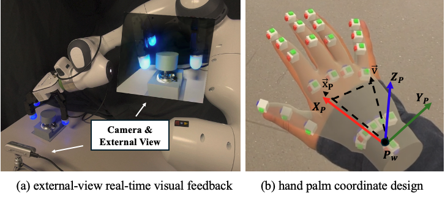
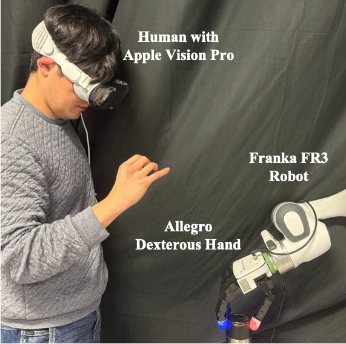
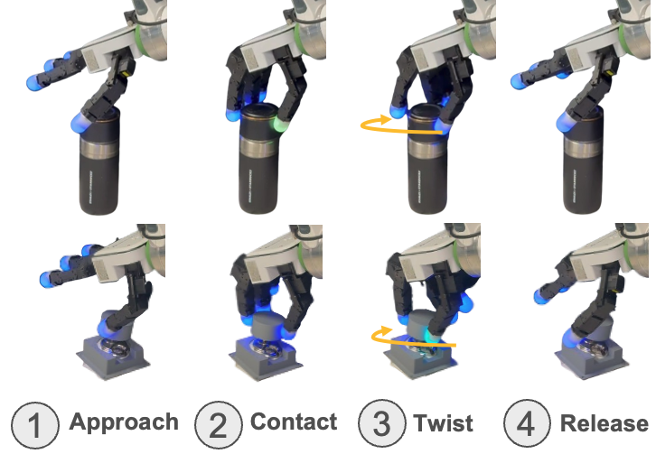

Abstract
Dexterous teleoperation via Mixed Reality (MR)-based interfaces offers a scalable paradigm for transferring human manipulation skills to dexterous robot hands. However, conventional retargeting approaches that minimize kinematic dissimilarity (e.g., joint angle or fingertip position error) often fail in contact-rich rotational manipulation, such as cap opening, key turning, and bolt screwing. This failure stems from the embodiment gap: mismatched link lengths, joint axes/limits, and fingertip geometry can cause direct pose imitation to induce tangential fingertip sliding rather than stable object rotation, resulting in screw axis drift, contact slip, and grasp instability.
To address this, we propose DexTwist, a functional twist-retargeting framework for MR-based dexterous teleoperation. DexTwist detects a tripod pinch, estimates the operator's intended screw axis and twist magnitude, and applies a real-time residual joint-space refinement that tracks turning progress while regularizing the robot tripod geometry. The refinement minimizes a virtual-object objective defined by turning angle, screw axis consistency, fingertip closure, and tripod stability. Simulation and real-world experiments show that DexTwist improves turning angle tracking and screw axis stability compared with a vector-based retargeting baseline.
Video
How DexTwist Works
1. MR-based teleoperation pipeline
An Apple Vision Pro provides the hand pose. We build a palm frame from the wrist and index/pinky knuckles and map its pose to the end-effector of a Franka FR3 under Cartesian impedance control. Camera streams from the workspace are shown in the headset for monitoring.

2. Tripod detection and twist intent
A tripod pinch (thumb–index–middle) activates twist retargeting. The screw axis is the normal of the fingertip tripod, and turning is accumulated as a scalar $\theta_{\text{task}}$ that persists across re-grasps, so ratcheting is supported.
3. Residual functional refinement
Starting from the vector-retargeted hand configuration, DexTwist refines the tripod joints each control cycle by minimizing a virtual-object objective in the robot palm frame:
- Turning angle: track the operator's accumulated twist.
- Fingertip closure: keep pairwise fingertip distances, suppress grip opening.
- Screw axis: keep the tripod normal aligned with the latched axis.
- Tripod centroid: suppress translational drift during turning.
Solved with five central-difference gradient-descent iterations and clipped updates per cycle, real time.
Experiments & Results
We compare against Vector Retargeting on a Franka FR3 + Allegro Hand, in simulation and on hardware. Real-world reference is an ArUco marker rigidly attached to the object; 5 trials per method.

Simulation
| Method | RMSE (°) | MAE (°) | Axis Dev. (°) |
|---|---|---|---|
| Vector Retargeting | 27.7 | 23.3 | 13.6 |
| DexTwist (Ours) | 18.8 | 15.6 | 6.1 |
Real world (reference: ArUco)
| Method | RMSE (°) | MAE (°) | Corr |
|---|---|---|---|
| Vector Retargeting | 23.2 | 15.6 | 0.83 |
| DexTwist (Ours) | 14.3 | 11.9 | 0.96 |
Real-world demonstrations

What we found
- Better angle tracking. Real-world RMSE drops from 23.2° to 14.3° against ArUco and correlation rises from 0.83 to 0.96.
- Stable screw axis. Simulated axis deviation falls from 13.6° to 6.1°.
- Robust to re-grasping. Episode-level turning state carries progress through ratcheting.
- Limitation. Tripod pinch only; visual hand tracking suffers under self-occlusion.
BibTeX
@inproceedings{lee2026dextwist,
title={DexTwist: Dexterous Hand Retargeting for Twist Motion via Mixed Reality-Based Teleoperation},
author={Lee, Dongmyoung and Li, Chengxi and Lee, Dongheui},
booktitle={IEEE International Conference on Advanced Robotics and its Social Impacts (ARSO)},
pages={149--154},
year={2026},
organization={IEEE}
}